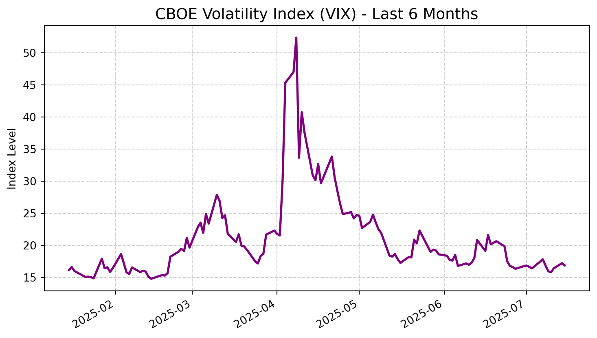
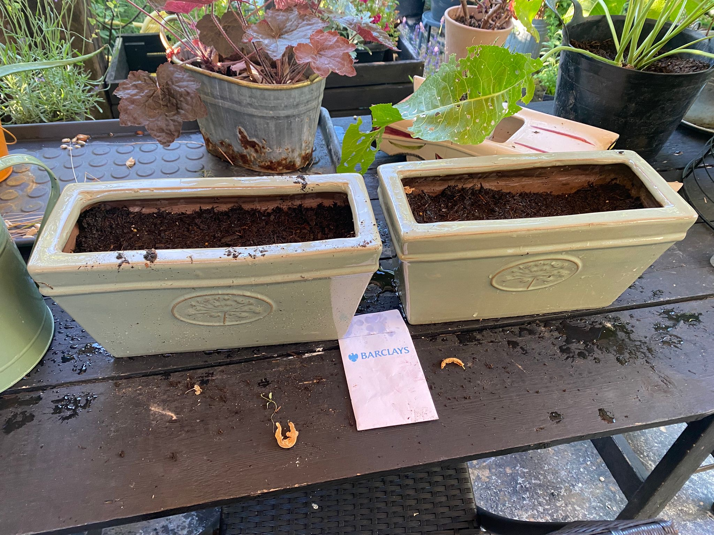

Theme of the Week: Trading Outshines Banking
A clear theme is emerging as banks begin to report their Q2 earnings: traders continue to ride the volatility ‘wave’. Across Wall Street, firms are seeing their Sales & Trading divisions post bumper profits, driven by client activity around whipsawing commodity prices and interest rate uncertainty. This stands in stark contrast to the more subdued performance from traditional Investment Banking (M&A, IPOs), where deal flow remains sluggish. This divergence highlights a key market dynamic: while uncertainty can stall corporate activity, it provides fertile ground for trading desks.
Copper Arbitrage: The Tariff Windfall
Following up on last week’s analysis of the US copper tariff, the real winners are becoming clear: the major commodity trading houses. Firms like Glencore and Trafigura are reportedly set for a $300 million windfall by exploiting the price arbitrage between the LME and COMEX markets. By purchasing copper on the cheaper international market and shipping it to the US to sell at the inflated, tariff-protected price, they are capitalizing on the exact market dislocation we discussed.
MY TAKE
This is a classic example of how physical logistics and market access create immense value in commodities trading. While the trade itself is simple in theory, only a handful of players have the global infrastructure to execute it at scale. It underscores that in commodities, it’s not just about predicting price direction but also about controlling the flow of the underlying asset.
Barclays Q2 Earnings: A Tale of Two Divisions
This morning, Barclays reported its second-quarter earnings, perfectly illustrating the week’s theme. The bank significantly beat expectations, driven almost entirely by its FICC (Fixed Income, Currencies, and Commodities) trading division, which saw revenues jump 25% year-over-year. In contrast, its advisory and capital markets unit was largely flat.
MY TAKE & A Personal Note Barclays’ results confirm that market-facing divisions are the engine of growth in this environment. The news reminded me to check up on the plant seeds I received from Barclays at a careers fair earlier this year. Just as the trading floor thrives on the right conditions, this plant has been a small project in nurturing growth; benefitting from a combination of great sunlight levels and watering. I’ll keep readers updated with the plant’s progress as we approach application season.

May: Just starting out

July: Showing strong growth
Seeing this physical growth is a great metaphor for my own progress. Just as the plant needs the right inputs to flourish, my goal over these months is to cultivate my skills and market knowledge to be ready for the fast-paced environment of a trading floor.